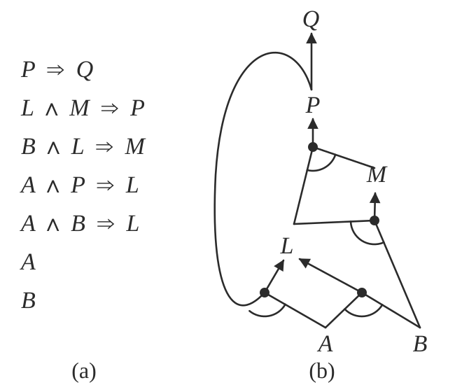
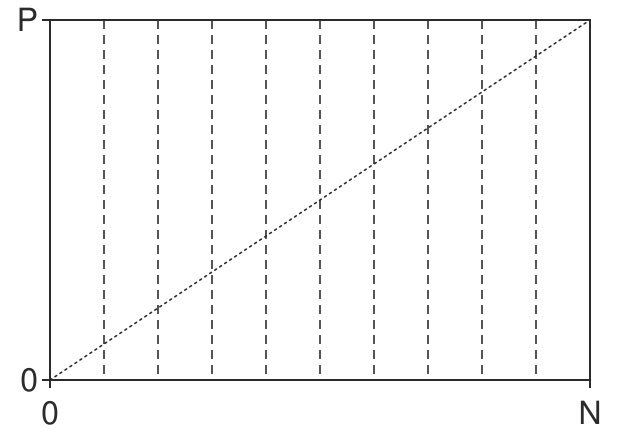

Search and logic#
Some notes on search and logic based on Berkeley's CS 188 course and "Artificial Intelligence" Russel & Norvig 3rd Edition + foundations of rule learning (furnkranz et al. 2014)
About this chapter
The first half follows Russell & Norvig on search. A problem is an initial state, actions, a transition model, goal states and a path cost, and the search strategies differ only in which frontier node they expand next. Uninformed search uses only the path cost \(g(n)\). A* adds a heuristic \(h(n)\), and the heuristic sections say when that keeps the answer optimal and how to build good heuristics from relaxed problems. Local search and constraint satisfaction drop the path and look only for a goal state.
The second half is logic: knowledge-based agents, resolution and chaining over Horn clauses, SAT solvers, first-order logic with unification, and classical planning in PDDL. The chapter ends with notes on Fürnkranz et al.’s book on rule learning, where finding a rule is again a search, over a graph of rules scored by heuristics such as precision.
Chapter outline: 10 sections
- Uninformed Search - Russell & Norvig 3.1-3.4
- A Search and Heuristics - Russell & Norvig 3.5-3.61 interactive
- Local Search - Russell & Norvig 4.1-4.2Local search keeps only a current state and moves to one of its neighbors.
- Constraint satisfaction problems - Russell & Norvig 6.1-6.51 interactiveA CSP opens up the state: it is a set of variables, their domains and constraints between them.
- Logical agents - Russell & Norvig 7.1-7.7 (omitting 7.5.2)1 figureA knowledge-based agent tells its knowledge base what it perceives and asks it what to do.
- First-order logic - Russell & Norvig 8.1-8.3.3Propositional logic only has facts.
- Inference in first-order logic - Russell & Norvig 9.1-9.4One route is propositionalization: replace the quantified variables with ground terms and use propositional inference.
- Classical planning - Russell & Norvig 10.1-10.2PDDL describes a planning problem with action schemas: preconditions that must hold, and effects that list only what changes.
- Fuzzy logic (lofti zadeh)
- Foundations of rule learning (furnkranz et al. 2014)1 figureA rule is a conjunction of binary conditions (the body) that implies a class (the head).
Uninformed Search - Russell & Norvig 3.1-3.4#
Problem-solving agents#
Before it searches, the agent turns its goal into a problem. The five components listed here define a problem, and every algorithm in the first half of the chapter works on this same definition.
goal - 1st step
problem formulation - deciding what action and states to consider given a goal
uninformed - given no info about problem besides definition
an agent with several immediate options of unknown value can decide what to do first by examining future actions that lead to states of known value
5 components
initial state
actions at each state
transition model
goal states
path cost function
Problems#
toy problems
vacuum world
8-puzzle (type of sliding-block puzzle)
8-queens problem
Knuth conjecture
real-world problems
route-finding
TSP (and othe touring problems)
VLSI layout
robot navigation
automatic assembly sequencing
Searching for solutions#
Search grows a tree from the initial state. The frontier holds the leaves waiting to be expanded, and the search strategy decides which one comes next. Graph search also keeps an explored set so that it never expands the same state twice.
start at a node and make a search tree
frontier = open list = set of all leaf nodes available for expansion at any given point
search strategy determines which state to expand next
want to avoid redundant paths
TREE-SEARCH - continuously expand the frontier
GRAPH-SEARCH - tree search but also keep track of previously visited states in explored set = closed set and don’t revisit
Infrastructure#
How search algorithms are compared: are they complete, are they optimal, and what do they cost in time and memory. The costs are written in terms of the branching factor \(b\), the depth \(d\) and the maximum path length \(m\), as in the table below.
node - data structure that contains parent, state, path-cost, action
metrics
complete - terminates in finite steps
optimal - finds best solution
time/space complexity
theoretical CS: \(\vert V\vert +\vert E\vert \)
b - branching factor - max number of branches of any node
d - depth - number of steps from the root
m - max length of any path in the search space
search cost - just time/memory
total cost - search cost + path cost
Uninformed search = blind search#
The table compares strategies by completeness, optimality, time and space, in terms of the branching factor \(b\), the depth \(d\) of the shallowest solution and the maximum depth \(m\). Breadth-first search and iterative deepening find the shallowest goal; uniform-cost search finds the cheapest one.
evaluation of tree-search strategies
Criterion
Breadth-First
Uniform-Cost (= Dijkstra’s)
Depth-First
Depth-Limited
Iterative Deepening
Bidirectional (if applicable)
Complete?
Yes\(^a\)
Yes\(^{a,b}\)
No
No
Yes\(^a\)
Yes\(^{a,d}\)
Time
\(O(b^d)\)
\(O(b^{1+\lfloor C^*/\epsilon \rfloor})\)
\(O(b^m)\)
\(O(b^\ell)\)
\(O(b^d)\)
\(O(b^{d/2})\)
Space
\(O(b^d)\)
\(O(b^{1+\lfloor C^*/\epsilon \rfloor})\)
\(O(bm)\)
\(O(b\ell)\)
\(O(bd)\)
\(O(b^{d/2})\)
Optimal?
Yes\(^c\)
Yes
No
No
Yes\(^c\)
Yes\(^{c,d}\)
\(b\) branching factor, \(d\) depth of shallowest solution, \(m\) max depth of search tree, \(\ell\) depth limit
\(^a\) complete if \(b\) is finite; \(^b\) complete if step costs \(\geq \epsilon\) for positive \(\epsilon\); \(^c\) optimal if step costs are all identical; \(^d\) if both directions use breadth-first search
bfs
uniform-cost search - always expand node with lowest path cost g(n)
frontier is priority queue ordered by g
dfs
backtracking search - dfs but only one successor is generated at a time; each partially expanded node remembers which succesor to generate next
only O(m) memory instead of O(bm)
depth-limited search
diameter of state space - longest possible distance to goal from any start
iterative deepening dfs - like bfs explores entire depth before moving on
iterative lengthening search - instead of depth limit has path-cost limit
bidirectional search - search from start and goal and see if frontiers intersect
just because they intersect doesn’t mean it was the shortest path
can be difficult to search backward from goal (ex. N-queens)
A* Search and Heuristics - Russell & Norvig 3.5-3.6#
Informed search#
Each strategy here is best-first search with a different evaluation function \(f\). Uniform-cost search uses \(f = g\), greedy best-first search uses \(f = h\), and A* uses their sum, the estimated cost of the cheapest solution through \(n\).
informed search - use path costs \(g(n)\) and problem-specific heuristic \(h(n)\)
has evaluation function f incorporating path cost g and heuristic h
heuristic h = estimated cost of cheapest path from state at node n to a goal state
best-first - choose nodes with best f
greedy best-first search - let f = h: keep expanding node closest to goal
when f=g, reduces to uniform-cost search
\(A^*\) search
\(f(n) = \cblue{g(n)} + \corange{h(n)}\) represents the estimated cost of the cheapest solution through n
path cost from start to n + heuristic estimate of cost from n to goal
\(A^*\) (with tree search) is optimal and complete if h(n) is admissible
\(h(n)\) never overestimates the cost to reach the goal
\(A^*\) (with graph search) is optimal and complete if h(n) is consistent (stronger than admissible) = monotonicity
\(h(n) \leq cost(n \to n') + h(n')\)
can draw contours of f (because nondecreasing)
\(A^*\) is also optimally efficient (guaranteed to expand fewest nodes) for any given consisten heuristic because any algorithm that that expands fewer nodes runs the risk of missing the optimal solution
for a heuristic, absolute error \(\delta := h^*-h\) and relative error \(\epsilon := \delta / h^*\)
here \(h^*\) is actual cost of root to goal
bad when lots of solutions with small absolute error because it must try them all
bad because it must store all nodes in memory
memory-bounded heuristic search
iterative-deepening \(A^*\) - iterative deepening with cutoff f-cost
recursive best-first search - like standard best-first search but with linear space
each node keeps f_limit variable which is best alternative path available from any ancestor
as it unwinds, each node is replaced with backed-up value - best f-value of its children
decides whether it’s worth reexpanding subtree later
often flips between different good paths (h is usually less optimistic for nodes close to the goal)
\(SMA^*\) - simplified memory-bounded A* - best-first until memory is full then forgot worst leaf node and add new leaf
store forgotten leaf node info in its parent
on hard problems, too much time switching between nodes
agents can also learn to search with metalevel learning
Heuristic functions#
A* expands every node with \(f(n) < C^*\), so a larger admissible heuristic means fewer expansions. The bullets give ways to get one: a heuristic that dominates another, the exact cost of a relaxed problem, the max of several heuristics, or exact subproblem costs stored in a pattern database.
effective branching factor \(b^*\) - if total nodes generated by A* is N and solution depth is d, then b* is branching factor for uniform tree of depth d for N+1 nodes: \(N+1 = 1+b^* +(b^*)^2 + ... + (b^*)^d\)
want \(b^*\) close to 1
generally want bigger heuristic because everything with \(f(n) < C^*\) will be expanded
\(h_1\) dominates \(h_2\) if \(h_1(n) \geq h_2(n) \: \forall \: n\)
relaxed problem - removes constraints and adds edges to the graph
solution to original problem still solves relaxed problem
cost of optimal solution to a relaxed problem is an admissible heuristic for the original problem
also is consistent
when there are several good heuristics, pick \(h(n) = \max[h_1(n), ..., h_m(n)]\) for each node
pattern database - heuristic stores exact solution cost for every possible subproblem instance
disjoint pattern database - break into independent possible subproblems
can learn heuristic by solving lots of problems using useful features
aren’t necessarily admissible / consistent
Local Search - Russell & Norvig 4.1-4.2#
Local search keeps only a current state and moves to one of its neighbors. It uses little memory and returns a goal state rather than a path, so it is really optimization.
local search looks for solution not path ~ like optimization
maintains only current node and its neighbors
Discrete space#
Hill climbing always moves uphill and can stop at a local maximum. The other methods add randomness to get out: simulated annealing sometimes accepts a worse move, beam search keeps \(k\) states, and genetic algorithms recombine a population.
hill-climbing = greedy local search
also stochastic hill climbing and random-restart hill climbing
simulated annealing - pick random move
if move better, then accept
otherwise accept with some probability p’roportional to how bad it is and accept less as time goes on
local beam search - pick k starts, then choose the best k states from their neighbors
stochastic beam search - pick best k with prob proportional to how good they are
genetic algorithms - population of k individuals
each scored by fitness function
pairs are selected for reproduction using crossover point
each location subject to random mutation
schema - substring in which some of the positions can be left unspecified (ex.
246****)want schema to be good representation because chunks tend to be passed on together
Continuous space#
In a continuous space the gradient gives the uphill direction. Solve \(\nabla f = 0\) when possible, otherwise take gradient steps; Newton-Raphson also uses the Hessian to choose the step.
hill-climbing / simulated annealing still work
could just discretize neighborhood of each state
use gradient
if possible, solve \(\nabla f = 0\)
otherwise SGD \(x = x + \alpha \nabla f(x)\)
can estimate gradient by evaluating response to small increments
line search - repeatedly double \(\alpha\) until f starts to increase again
Newton-Raphson method
finds roots of func using 1st derive: \(x_\text{root} = x - g(x) / g'(x)\)
apply this on 1st deriv to get minimum
\(x = x - H_f^{-1} (x) \nabla f(x)\) where H is the Hessian of 2nd derivs
Constraint satisfaction problems - Russell & Norvig 6.1-6.5#
A CSP opens up the state: it is a set of variables, their domains and constraints between them. That structure allows a solver to prune domains by inference before and during backtracking, and the shape of the constraint graph (trees, cycle cutsets, tree width) bounds how hard the problem is.
CSP
set of variables \(X_1, ..., X_n\)
set of domains \(D_1, ..., D_n\)
set of constraints \(C\) specifying allowable values
each state is an assignment of variables
consistent - doesn’t violate constraints
complete - every variable is assigned
constraint graph - nodes are variables and links connect any 2 variables that participate in a constraint
unary constraint - restricts value of single variable
binary constraint
global constraint - arbitrary number of variables (doesn’t have to be all)
converting graphs to only binary constraints
every finite-domain constraint can be reduced to set of binary constraints w/ enough auxiliary variables
dual graph transformation - create a new graph with one variable for each constraint in the original graph and one binary constraint for each pair of original constraints that share variables
also can have preference constraints instead of absolute constraints
Inference (prunes search space before backtracking)#
Inference shrinks domains by enforcing local consistency. Node consistency handles unary constraints, arc consistency (AC-3) makes every binary constraint satisfiable from both ends, and path and \(k\)-consistency look at larger groups of variables at a higher cost.
node consistency - prune domains violating unary constraints
arc consistency - satisfy binary constraints (every node is made arc-consistent with all other nodes)
uses AC-3 algorithm
set of all arcs = binary constraints
pick one and apply it
if things changed, re-add all the neighboring arcs to the set
\(O(cd^3)\) where \(d = \vert domain\vert \), c = # arcs
variable can be generalized arc consistent
path consistency - consider constraints on triplets - PC-2 algorithm
extends to k-consistency (although path consistency assumes binary constraint networks)
strongly k-consistent - also (k-1) consistent, (k-2) consistent, … 1-consistent
implies \(O(k^2d)\)
establishing k-consistency time/space is exponential in k
global constraints can have more efficient algorithms
ex. assign different colors to everything
resource constraint = atmost constraint - sum of variable must not exceed some limit
bounds propagation - make sure variables can be allotted to solve resource constraint
Backtracking#
Backtracking search is depth-first search that assigns one variable at a time and backs up when a variable has no legal value left. The three improvements below are choosing the next variable and value well, running inference after each assignment, and backing up to the cause of a failure rather than to the last assignment.
CSPs are commutative - order of choosing states doesn’t matter
backtracking search - depth-first search that chooses values for one variable at a time and backtracks when no legal values left
variable and value ordering
minimum-remaining-values heuristic - assign variable with fewest choices
degree heuristic - pick variable involved in largest number of constraints on other unassigned variables
least-constraining-value heuristic - prefers value that rules out fewest choices for nieghboring variables
interleaving search and inference
forward checking - when we assign a variable in search, check arc-consistency on its neighbors
maintaining arc consistency (MAC) - when we assign a variable, call AC-3, intializing with arcs to neighbors
intelligent backtracking - looking backward
keep track of conflict set for each node (list of variable assignments that deleted things from its domain)
backjumping - backtracks to most recent assignment in conflict set
too simple - forward checking makes this redundant
conflict-directed backjumping
let \(X_j\) be current variable and \(conf(X_j)\) be conflict set. If every possible value for \(X_j\) fails, backjump to the most recent variable \(X_i\) in \(conf(X_j)\) and set \(conf(X_i) = conf(X_i) \cup conf(X_j) - X_i\)
constraint learning - findining minimum set of variables/values from conflict set that causes the problem = no-good
Local search for csps#
Local search starts from a complete assignment and repairs it. Min-conflicts moves a variable to the value that violates the fewest constraints.
start with some assignment to variables
min-conflicts heuristic - change variable to minimize conflicts
can escape plateaus with tabu search - keep small list of visited states
could use constraint weighting
Structure of problems#
The shape of the constraint graph bounds the cost. A tree-structured CSP is solved in time linear in the number of variables, so both methods here reduce a graph to a tree: assign a cycle cutset, or group the variables into a tree decomposition.
connected components of constraint graph are independent subproblems
tree - any 2 variables are connected by only one path
directed arc consistency - ordered variables \(X_i\), every \(X_i\) is consistent with each \(X_j\) for j>i
tree with n nodes can be made directed arc-consisten in \(O(n)\) steps - \(O(nd^2)\)
two ways to reduce constraint graphs to trees
assign variables so remaining variables form a tree
assigned variables called cycle cutset with size c
\(O[d^c \cdot (n-c) d^2]\)
finding smallest cutset is hard, but can use approximation called cutset conditioning
tree decomposition - view each subproblem as a mega-variable
tree width w - size of largest subproblem - 1
solvable in \(O(n d^{w+1})\)
also can look at structure in variable values
ex. value symmetry - can assign different colorings
use symmetry-breaking constraint - assign colors in alphabetical order
Logical agents - Russell & Norvig 7.1-7.7 (omitting 7.5.2)#
A knowledge-based agent tells its knowledge base what it perceives and asks it what to do. The basic question is entailment, \(A \vDash B\): \(B\) is true in every model where \(A\) is true. Model checking answers it by trying every truth assignment.
knowledge-based agents - intelligence is based on reasoning that operates on internal representations of knowledge
deductive - general-to-specific
inductive - specific-to-general
3 steps: given a percept, the agent
adds the percept to its knowledge base (KB)
asks the knowledge base for the best action
tells the knowledge base that it has taken that action
2 approaches
declarative approach - tell sentences until agent knows how to operate
know something, can verbalize it
procedural approach - encodes desired behaviors as program code
intuitively know how to do it (ex. riding a bike)
ex. Wumpus World
logical entailment between sentences
\(A \vDash B\) means B follows logically from A (A implies B)
logical inference - showing entailment
model checking - try everything to see if A \(\implies\) B
this is sound = truth-preserving
complete - can derive any sentence that is entailed
TT-ENTAILS
recursively enumerate all sentences by assigning true, false to each variable
check if these are valid within the KB
if they are, they must also match the query (otherwise return false)
grounding - connection between logic and real environment (usually sensors)
theorem properties
validity - tautalogy - true under all models
satisfiable - true under some model
ex. boolean-SAT
monotonicity - set of implications can only increase as info is added to the knowledge base
if \(KB \implies A\) then \(KB \land B \implies A\)
Theorem proving#
Two ways to decide entailment. Resolution on clauses in CNF is complete for all of propositional logic. Forward and backward chaining only handle Horn clauses but run in time linear in the size of the KB. Checking satisfiability (DPLL, WalkSAT) closes the section.
resolution rule - resolves different rules with each other - leads to complete inference procedure
CNF - conjunctive normal form - conjunction (and) of clauses (with ors)
ex: \( ( \neg A \lor B) \land \neg C \land (D \lor E)\)
anything can be expressed as this
horn clause - at most one positive
definite clause - disjunction of literals with exactly one positive: ex. (\(A \lor \neg B \lor \neg C\))
goal clause - no positive: ex. (\(\neg A \lor \neg B \lor \neg C\))
benefits
easy to understand
forward-chaining / backward-chaining are applicable
deciding entailment is linear in size (KB)
forward/backward chaining: checks if q is entailed by KB of definite clauses
data-driven
keep adding until query is added or nothing else can be added
(a) A set of Horn clauses. (b) The corresponding AND–OR graph

Fig. 80 Figure 1. Horn clauses (a) and their AND-OR graph (b). Arcs joined at a dot are conjunctions: both premises must hold before the arrow to the conclusion fires. Forward chaining starts from the known facts A and B at the bottom and works up toward Q.#
backward chaining works backwards from the query
goal-driven
keep going until get back to known facts
checking satisfiability
complete backtracking
davis-putnam algorithm = DPLL - like TT-entails with 3 improvements
early termination
pure symbol heuristic - pure symbol appears with same sign in all clauses, can just set it to the proper value
unit clause heuristic - clause with just one literal or one literal not already assigned false
other improvements (similar to search)
component analysis
variable and value ordering
intelligent backtracking
random restarts
clever indexing
local search
evaluation function can just count number of unsatisfied clauses (MIN-CONFLICTS algorithm for CSPs)
WALKSAT - randomly chooses between flipping based on MIN-CONFLICTS and randomly
runs forever if no soln
underconstrained problems are easy to find solns
satisfiability threshold conjecture - for random clauses, probability of satisfiability goes to 0 or 1 based on ratio of clauses to symbols
hardest problems are at the threshold

Agents based on propositional logic#
To act over time, propositions get a time index (fluents). Successor-state axioms say a fluent keeps its value unless an action changes it. SATPLAN then finds a plan by giving these axioms and the goal to a SAT solver.
fluents = state variables that change over time
can index these by time
effect axioms - specify the effect of an action at the next time step
frame axioms - assert that all propositions remain the same under actions
succesor-state axiom: \(F^{t+1} \iff \cgreen{ActionCausesF^t} \lor \cblue{(F^t \land -ActionCausesNotF^t )}\)
ex. \(HaveArrow^{t+1} \iff (HaveArrow^t \land \neg Shoot^t)\)
makes things stay the same unles something changes
state-estimation: keep track of belief state
can just use 1-CNF (conjunctions of literals: ex. \(WumpusAlive \land L_2 \land B\))
1-CNF includes all states that are in fact possible given the full percept history
conservative approximation - contains belief state, but also extraneous stuff
planning
could use \(A^*\) with entailment
otherwise, could use SATPLAN
SATPLAN - how to make plans for future actions that solve the goal by propositional inference
basic idea
make assertions
transitions up to some max time \(t_{final}\)
assert that goal is achieved at time \(t_{final}\) (ex. havegold)
present this to a SAT solver
must add precondition axioms - states that action occurrence requires preconditions to be satisfied
ex. can’t shoow without arrow
must add action exclusion axioms - one action at a time
ex. can’t shoot and move at once
First-order logic - Russell & Norvig 8.1-8.3.3#
Propositional logic only has facts. First-order logic adds objects, relations, functions and the quantifiers \(\forall, \exists\). The table compares what each logic assumes exists and what an agent can believe about it.
formal languages and their ontological and epistemological commitments
Language
Ontological Commitment (What exists in the world)
Epistemological Commitment (What an agent believes about facts)
Propositional logic
facts
true/false/unknown
First-order logic
facts, objects, relations
true/false/unknown
Temporal logic
facts, objects, relations, times
true/false/unknown
Probability theory
facts
degree of belief \(\in [0, 1]\)
Fuzzy logic
facts with degree of truth \(\in [0, 1]\)
known interval value
basically added objects, relations, quantifiers (\(\exists, \forall\))
declarative language - semantics based on a truth relation between sentences and possible worlds
has compositionality - meaning decomposes
sapir-whorf hypothesis - understanding of the world is influenced by the language we speak
3 elements
objects - john (cannot appear by itself, need boolean value)
relations - set of tuples (ex. brother(richard, john))
functions - only one value for given input (ex. leftLeg(john))
sentences return true or false
combine these things
first-order logic assumes more about the world than propositional logic
epistemological commitments - the possible states of knowledge that a logic allows with respect to each fact
higher-order logic - views relations and functions as objects in themselves
first-order consists of symbols
constant symbols - stand for objects
predicate symbols - stand for relations
function symbols - stand for functions
arity - fixes number of args
term - logical expresision tha refers to an object
atomic sentence - formed from a predicate symbol optionally followed by a parenthesized list of terms
true if relation holds among objects referred to by the args
ex. Brother(Richard, John)
interpretation - specifies exactly which objects, relations and functions are referred to by the symbols
Inference in first-order logic - Russell & Norvig 9.1-9.4#
One route is propositionalization: replace the quantified variables with ground terms and use propositional inference. The other works on first-order sentences directly: unification finds a substitution that makes two expressions identical, and forward and backward chaining apply generalized modus ponens. Entailment in first-order logic is only semidecidable.
propositionalization - can convert first-order logic to propositional logic and do propositional inference
universal instantiation - we can infer any sentence obtained by substituting a ground term for the variable
replace “forall x” with a specific x
existential instantiation - variable is replaced by a new constant symbol
replace “there exists x” with a specific x that give a name (called the Skolem constant)
only need finite subset of propositionalized KB - can stop nested functions at some depth
semidecidable - algorithms exist that say yes to every entailed sentence, but no algorithm exists that also says no to every nonentailed sentence
generalized modus ponens
unification - finding substitutions that make different logical expressions look identical
UNIFY(Knows(John,x), Knows(x,Elizabeth)) = fail.
use different x’s - standardizing apart
want most general unifier
need occur check - S(x) can’t unify with S(S(x))
storage and retrieval
STORE(s) - stores a sentence s into the KB
FETCH(q) - returns all unifiers such that the query q unifies with some sentence in the KB
only try to unify reasonable facts using indexing
query such as Employs(IBM, Richard)
all possible unifying queries form subsumption lattice
forward chaining: start w/ atomic sentences + apply modus ponens until no new inferences can be made
first-order definite clauses - (remember this is a type of Horn clause)
Datalog - language restricted to first-order definite clauses with no function symbols
simple forward-chaining: FOL-FC-ASK - may not terminate if not entailed
pattern matching is expensive
rechecks every rule
generates irrelevant facts
efficient forward chaining (solns to above problems)
conjuct odering problem - find an ordering to solve the conjuncts of the rule premise so the total cost is minimized
requires heuristics (ex. minimum-remaining-values)
incremental forward chaining - ignore redundant rules
every new fact inferred on iteration t must be derived from at least one new fact inferred on iteration t-1
rete algorithm was first to do this
irrelevant facts can be ignored by backward chaining
could also use deductive database to keep track of relevant variables
backward-chaining
simple backward-chaining: FOL-BC-ASK
is a generator - returns multiple times, each giving one possible result
like DFS - might go forever
logic programming: algorithm = logic + control
ex. prolog
a lot more here
can have parallelism
redudant inference / infinite loops because of repeated states and infinite paths
can use memoization (similar to the dynamic programming that forward-chaining does)
generally easier than converting it into FOLD
constraint logic programming - allows variables to be constrained rather than bound
allows for things with infinite solns
can use metarules to determine which conjuncts are tried first
Classical planning - Russell & Norvig 10.1-10.2#
PDDL describes a planning problem with action schemas: preconditions that must hold, and effects that list only what changes. Planning is then search over states, forward from the start or backward from the goal.
planning - devising a plan of action to achieve one’s goals
Planning Domain Definition Language (PDDL) - uses factored representation of world
closed-world assumption - fluents that aren’t present are false
solving the frame problem: only specify result of action in terms of what changes
requires 4 things (like search w/out path cost function)
initial state
actions
transitions
goals
no quantifiers
set of ground (variable-free) actions can be represented by a single action schema
like a method with precond and effect
\(Action(Fly(p, from, to))\):
PRECOND: \(At(p, from) \land Plane(p) \land Airport(from) \land Airport(to)\)
EFFECT: \(\neg At(p, from) \land At(p, to)\)
can only use variables in the precondition
problems
PlanSAT - try to find plan that solves a planning problem
Bounded PlanSAT - ask whether there is a soln of length k or less
Algorithms for planning as state-space search#
Forward search applies actions from the initial state. Backward search starts from the goal and regresses through actions that could achieve it. Both need heuristics, and the ones here relax the problem, for example by ignoring preconditions or delete lists.
forward (progression) state-space search
very inefficient
generally forward search is preferred because it’s easier to come up with good heuristics
backward (regression) relevant-states search
PDLL makes it easy to regress from a state description to the predecessor state description
start with a set of things in the goal (and any other fluent can hae any value)
keep track of a set at all points
in going backward, the effects that were added need not have been true before, but preconditions must have held before
heuristics
ex. ignore preconditions
ex. ignore delete lists - remove all negative literals
ex. state abstractions - many-to-one mapping from states \(\to\) abstract states
ex. ignore some fluents
decomposition
requires subgoal independence
Fuzzy logic (lofti zadeh)#
ex blog post
fuzzy sets - instead of binary membership, can have partial membership \(\in [0, 1]\)
intersection of sets - usually take min over memberships
union of sets - usually take max over memberships
Foundations of rule learning (furnkranz et al. 2014)#
A rule is a conjunction of binary conditions (the body) that implies a class (the head). \(P\) and \(N\) count the positives and negatives in the data, and \(\hat P = TP\), \(\hat N = FP\) count those a rule covers. The evaluation measures in chapter 7 are all functions of these counts.
terminology - rule has a condition (conjunctive of binary features) + a conclusion = implication
rule has 2 parts
antecedent = body - consists of conditions = binary features e.g. \(X_1 > 0\), \(X_2=0\)
conclusion = consequent* = head
rule \(r\) has length L
\(P, N\) - total positives / negatives in the data
\(TP =\hat P, FP =\hat N\) - positives / negatives covered (predicted) by a rule
\(FN, TN\) - positives / negatives not covered by a rule
\(\frac{TP}{P}\) = true positive rate = sensitivity
\(\frac{TN}{N}\) = true negative rate = specificity
rules evaluated with a heuristic \(H(\hat P, \hat N)\)
Categorization of tasks (ch 1)#
Predictive rule learning learns rules for a class, as in concept learning. Descriptive rule learning finds patterns instead: association rules, or subgroups whose class distribution differs from the whole population.
historically, a lot of this was developed in the data mining community and gave rise to packages such as WEKA, RAPID-I, KNIME, ORANGE
historical algos: AQ2 (michalski, 1969), PRISM (cendrowska, 1987), CN2 (Clar & nibett, 1989), FOIL (quinlan, 1990), RIPPER (cohen 1995), PROGOL (muggleton, 1995), ALEPH (srinivasan, 1999) - entire rule workbench in one prolog file, OPUS (webb, 1955), CBA (lui et al. 1998)
predictive rules
propositional learning (just propositional logic) v relational learning (first-order logic) = relational data mining = inductive logic programming
concept learning - binary classification task
complete rule set \(\mathcal R\) - covers all positive examples (recall = 1)
consistent - rule set \(\mathcal R\) - covers no negative examples (precision = 1)
descriptive data mining - usually unsupervised, just learn patterns
associative rule learning is unsupervised descriptive (e.g. APRIORI)
here, both the conditions + conclusions can have many features
subgroup discovery is descriptive, but has a supervised label, so is actually like supervised clustering - goal is to learn subgroups with a significantly different class distribution than the entire population
relational learning - when data doesn’t fit in a table but is associated (e.g. customers have many purchases each)
Basics of learning rules (ch 2)#
Finding a rule is a search over a refinement graph, where each rule is a node and refinement operators connect rules. Sequential covering builds a rule set one rule at a time, removing the examples each rule covers.
finding rules is basically a search problem
want to find best rules (generally bigger coverage, less complexity, higher accuracy)
can thing of it as searching on a refinement graph - each rule is a node and refinement operators connect rules
stopping criteria
threshold for some heuristic
making final prediction
final predictions can be made via majority vote, using most accurate rule, or averaging predictions.
algorithms
sequential covering (remove covered points after each rule)
(binary split) features (ch 4)#
Rules are built from binary features. The chapter covers how to make them from categorical and continuous attributes (a covering table), when a feature is irrelevant, and how to handle missing or imprecise values.
here, feature means something binary that we split on
selector is smth of the form \(A_i \sim v_{i, j}\) where relation \(\sim\) is like \(=, \geq, \leq\)
can also be attribute sets (internal disjunctions) \(A_i \in \{v_1, v_2, v_3 \}\), intervals (range operators), or attribute sets (internal conjunctions)
can also be simple combinations of binary variables
relational features - function between features (e.g. length > height)
can have splits that are functions of previous splits (like a residual DNN connection)
many algorithms start by making a covering table = table of binary values for all possible (reasonable) splits for all features
split on all categorical features
split between all values of continuous features (or ordered discrete)
can compute relational features (e.g. \(A_1 - A_2\)) by just adding these as features
feature relevancy
\(pn-pair\): pair of training examples where one is positive and one is negative
totally irrelevant features - don’t distinguish between any positive/negative examples
a feature \(f_1\) is more relevant than another \(f_2\) if it separates all the \(pn\)-pairs that \(f_2\) does and more
can also manually set thresholds on TP, FP to decide irrelevance
missing values
different types
missing - was not measured but should have been
not applicable - e.g. pregnant for a male
don’t care - could be anything
basic strategies
delete incomplement examples
treat missing as special value
impute w/ mean/median/linear prediction
fill in prob distr. over missing val
pessimistic value strategy - imputed values shouldn’t differentiate between classes - set value so it doesn’t get used (e.g. false for positive class and true for neg class)
imprecise values - continuous values with noise
might want to test variables with \(\pm \delta\) handled with pessimistic value strategy
fuzzy rules - probabilistically split
Relational features (ch 5)#
these kinds of task use relational background knowledge + databases
ex. from knowledge about things like female(X), parent(X, Y), learn that daughter(X, Y):= female(X) , parent(Y, X)
allow \(\forall, \exists\)
Learning single rules (ch 6)#
Learning one rule is a search: refine a candidate rule, score it with a heuristic, keep the best. The search algorithms listed after the pseudocode differ in how many candidates they keep.
search problem to maximize some criteria subject to some constraints
top-down - start with large cover then go to small
bottom-up - start with high-sensitivity, low cover rules then go larger
find best rule (pseudocode)
function FindBestRule(ℰ) input: ℰ = 𝒫 ∪ 𝒩: a set of positive and negative examples for a class c, represented with a set of features ℱ algorithm: r* := InitializeRule(ℰ) # e.g. always predict class c h* := EvaluateRule(r*) ℛ := {r*} while ℛ ≠ ∅ do ℛ_cand := SelectCandidates(ℛ, ℰ) ℛ := ℛ \ ℛ_cand for r ∈ ℛ_cand do ρ(r) = RefineRule(r, ℰ) # e.g. add a clause for r′ ∈ ρ(r) do if RuleStoppingCriterion(r′, ℰ) then next r′ h′ := EvaluateRule(r′, ℰ) ℛ := InsertSort(r′, ℛ) if h′ > h* then h* := h′, r* := r′ endfor endfor ℛ := FilterRules(ℛ, ℰ) # e.g. only pick best rule endwhile output: r*: the best rule for the given set of examplessearch algos
exhaustive search
hill-climbing = local-search - can make less myopic by considering multiple refinements at a time
beam-search - keep k best candidates
best-first search - beam search but keep all candidates
ordered search - prune the search space based on knowledge (e.g. order splitting values)
level-wise search (e.g. apriori) - generate in parallel all rules with a certain minimum quality
stochastic search - involves randomness
search directions: combine top-down (specialization) with bottom-up (generalization)
Rule evaluation measures (ch 7)#
Many of these measures are equivalent: compatible heuristics rank every rule in the same order. In the coverage space below, each rule is a point (covered negatives, covered positives).
sometimes we only evaluate the quality of covered rules (e.g. rule list) whereas sometimes we evaluate quality of disjoint sets (e.g. both sides of decision tree split)
common heuristics are rules that cover a lots of samples or rules that are simple
equivalent heuristics: compatible heuristics \(H\), \(G\) rank rules in the same order (antagonistic rank rules in opposite order)
axes to evaluate rules (want to be close to top-left)

Fig. 81 Figure 2. Coverage space. A rule is a point: x is the number of negatives it covers (0 to N), y the number of positives (0 to P). The dotted diagonal joins covering nothing, (0, 0), to covering everything, (N, P). Good rules sit toward the top left.#
list of metrics (to maximize), all basically trade of recall / precision
\(Specificity = TN / N\)
\(Sensitivity = Recall = TP / P\)
\(Support = TP / (P + N)\)
\(CovDiff = TP - FP\)
equivalent to classification \(Accuracy=(TP + TN) / (P + N)\)
\(Coverage = (TP + FN) / (P + N)\) - fraction of points covered
\(RateDiff = TP / P - FP / N\)
this is equivalent to more general weighted relative accuracy \(LinCost = a \cdot TP - b \cdot FP\)
\(Precision = TP / \underbrace{(TP + FP)}_{\text{predicted pos}}\) (sometimes called confidence or rule accuracy)
RIPPER’s pruning heuristic \((TP - FP) / (TP + FP)\) is equivalent to precision
covering ratio \(TP / FP\) is equivalent to precision
information-theoretic measures
\(Info = -\log_2 Precision\)
\(Entropy = - (Prec \cdot \log_2 Prec + (1-Prec) \cdot \log_2 (1-Prec))\)
when \(TP \leq FN\), same as precision and when \(TP > FN\) opposite of precision
originally developed for case where we aren’t covering positive examples but rather predicting with majority class
also KL-divergence and Gini index
\(Laplace(r) = (TN + 1)/(TP+1+FP+1)\) - pad all the values by 1 to adjust scores when numbers are small
likelihood ratio statistic - compare distr in rule to distr in full dataset
complexity-based heuristics
\(Length\)
\(MDL(r) = \cblue{I(r)} + \corange{I(\epsilon\vert r)}\)
bits to encode the rule + bits to encode its errors given the rule
hard to compute

Key ideas
Every search strategy works on the same problem definition and differs only in which frontier node it expands next.
A* expands nodes in order of \(f = g + h\). With tree search it is optimal when \(h\) never overestimates the cost to the goal, and with graph search when \(h\) is consistent.
The exact cost of a relaxed problem is an admissible heuristic, and a larger admissible heuristic means fewer expansions.
In a CSP, inference such as forward checking or arc consistency prunes domains during backtracking, and the minimum-remaining-values heuristic picks the most constrained variable first.
With Horn clauses, forward and backward chaining decide entailment in time linear in the size of the KB; general propositional logic needs resolution or a SAT solver.
Planning and rule learning are search again, over states described in PDDL and over a graph of rules scored by heuristics.